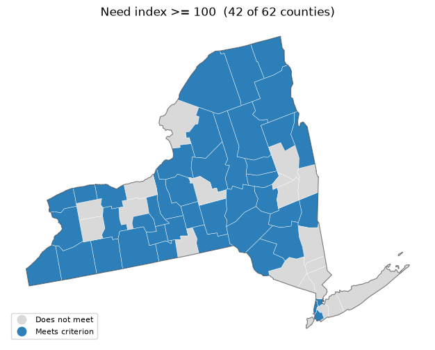
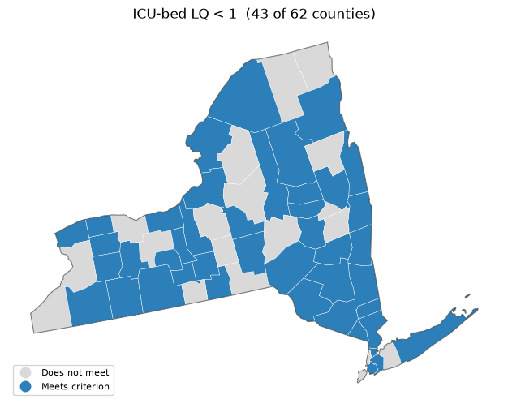
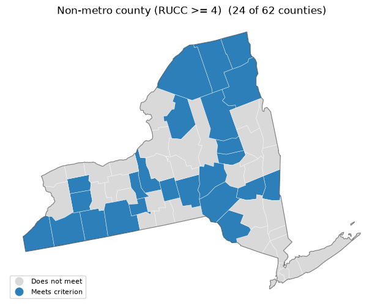
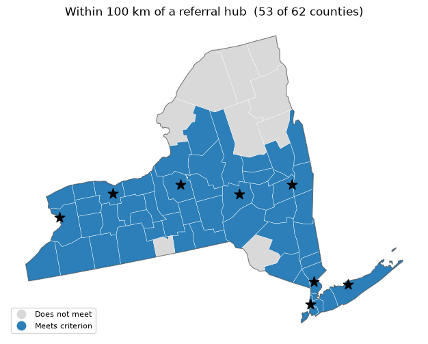
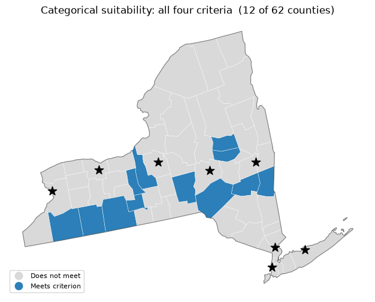
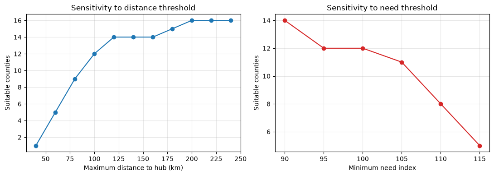

Categorical (Boolean) Suitability Analysis is a transparent, rule-based, multi-criteria approach for evaluating potential locations (such as counties, regions, or pixels) based on fixed thresholds for each criterion. Each criterion, such as population need, distance to hospitals, presence of existing facilities, or rurality, is individually assessed using user-defined, domain-specific rules (for example, “need_index > 110” or “distance_to_hub < 100 km”).
For every location, each threshold is applied, and the location is assigned a value of 1 (suitable/True) if it passes the threshold or 0 (not suitable/False) if it does not. The specific choice of thresholds reflects planning priorities or constraints and should be adapted to the decision context.
Once all criteria are applied, their results are combined using logical rules, including: - Boolean AND (intersection): Only those locations that meet all individual criteria are deemed suitable. - Boolean OR (union): Locations that satisfy at least one criterion are considered suitable. - k-of-n logic (“at least k out of n”): Locations pass if they satisfy at least k out of n criteria, allowing for more flexible decision-making in situations where partial compliance is acceptable.
This method is prized for its simplicity and explainability: it provides an unambiguous, auditable record of how decisions are made. However, categorical suitability analysis is sensitive to the exact thresholds chosen, and in its basic form, treats each criterion as equally important unless weights are introduced using more advanced methods (not covered here).
In essence, categorical suitability analysis converts each evaluation into a series of yes/no (Boolean) questions and keeps only those locations answering “yes” to all (or enough, depending on the logic chosen). Mathematically, for Boolean AND, this is the intersection of all passing areas:
This approach is non-compensatory: a location that excels on several criteria but fails just one is excluded, no amount of strength on one factor can offset weakness on another. As such, categorical suitability is well-suited to cases with hard requirements (such as regulatory standards or minimum levels of access), and for initial screening of location candidates.
Apply crisp thresholds to each criterion, then combine them with Boolean AND / OR and k-of-n counting using geolattice.spatial_analysis.multi_criteria_suitability_analysis.
Installation. This notebook needs installation option 2 (core plus spatial analysis): pip install "geolattice[analysis]". See “Installation options” in the GeoLattice README.
Code
# Display matplotlib figures inline in this Jupyter notebook.%matplotlib inline# Standard library imports for path setup.import warnings # silence benign RuntimeWarningsfrom pathlib import Path # filesystem paths for MCSM sample data# Third-party numeric / plotting stack used throughout this notebook.import matplotlib.pyplot as plt # figure and axes creation for Boolean mapsimport numpy as np # array ops kept available for threshold experimentsimport pandas as pd # tabular summaries of suitability flags# ===================================================================# Locate the repository root, import Boolean helpers, load criteria layers.# ===================================================================# The installed package lives in src/; the repository root is its parent.import geolatticeROOT = Path(geolattice.__file__).resolve().parents[1]ifnot (ROOT /"Data").is_dir():raiseFileNotFoundError("Could not find the GeoLattice repository root.")DATA_DIR = ROOT /"Data"/"03_spatial_analysis"/"MCSM_data"# shared MCSM sample-data folderDATA_DIR.mkdir(parents=True, exist_ok=True) # create it if missingwarnings.filterwarnings("ignore", category=RuntimeWarning) # quiet numeric warningspd.set_option("display.width", 120) # wider DataFrame previewsplt.rcParams["figure.figsize"] = [9, 6] # default figure size for mapsimport geopandas as gpd # vector GeoDataFrames for counties / hubsfrom matplotlib.colors import ListedColormap # two-class Boolean colormap# GeoLattice Boolean overlay helpers: AND, OR, and per-feature criterion counts.from geolattice.spatial_analysis.multi_criteria_suitability_analysis import ( categorical_and, # logical AND across Boolean criterion series categorical_or, # logical OR across Boolean criterion series criteria_count, # count how many criteria each feature meets)# Load the derived criteria GeoPackage written by the previous notebook.counties = gpd.read_file(str(DATA_DIR /"ny_criteria.gpkg"), layer="counties") # criteria countiesstate = gpd.read_file(str(DATA_DIR /"ny_criteria.gpkg"), layer="state") # state outlinehubs = gpd.read_file(str(DATA_DIR /"ny_criteria.gpkg"), layer="hubs") # referral hubsBOOL_CMAP = ListedColormap(["#d9d9d9", "#2c7fb8"]) # False = grey, True = bluedef boolean_map(gdf, column, title, show_hubs=False):"""Plot a two-class Boolean choropleth and optionally overlay hubs."""# Map True/False to legend labels so categories plot in a fixed order. data = gdf.assign(_v=gdf[column].map({True: "Meets criterion", False: "Does not meet"})) # legend labels ax = data.plot("_v", categorical=True, cmap=BOOL_CMAP, legend=True, categories=["Does not meet", "Meets criterion"], # fixed category order edgecolor="white", linewidth=0.3, # county edges legend_kwds={"loc": "lower left", "fontsize": 8}) # legend placement state.boundary.plot(ax=ax, color="#00000080", linewidth=0.8) # state outlineif show_hubs: hubs.plot(ax=ax, marker="*", color="black", markersize=120) # optional hub markers ax.set_title(f"{title} ({int(gdf[column].sum())} of {len(gdf)} counties)") # title with pass count ax.set_axis_off() # hide axis ticksreturn ax # return axes for further use
Defining Categorical Suitability for Health Access Analysis
In this section, we analyze which counties in New York State meet a set of operational criteria that indicate spatial need or vulnerability in the context of healthcare access. This approach is especially useful when criteria are best represented by clear, binary thresholds, translating complex, nuanced measures (like rurality, healthcare capacity, or proximity to specialist centers) into simple yes/no decisions.
Applications: - Identifying high-need areas for intervention, funding, or further study. - Supporting resource allocation by revealing gaps in capacity or access. - Highlighting places where multiple challenges overlap (e.g., rural counties with both high need and limited ICU availability far from major hubs). - Enabling transparent, replicable methods rooted in policy benchmarks or established research cutoffs.
The following analysis will show how these criteria can be combined to map counties according to whether, and how many, standards of vulnerability or access challenge they meet.
Choosing Thresholds: Principles and Examples
When establishing thresholds for spatial suitability analysis, it is essential to base cutoffs on policy, research evidence, or practical reference points rather than arbitrary values. This ensures the analysis remains meaningful and relevant to real-world needs.
Below are the criteria, operational definitions, and their justifications:
Criterion
Condition
Rationale
Need
need_index >= 100
At or above the New York State average need index
Capacity gap
icu_lq < 1
Fewer ICU beds per capita than the statewide benchmark
Rurality
rucc >= 4
Meets USDA non-metropolitan county definition
Referral access
hub_km <= 100
Within typical 1-1.5 hour drive (common referral radius)
These choices set criteria that can be interpreted consistently across the state and aligned with conventional standards in healthcare access and rural health research.
Code
# Define crisp thresholds for the four clinic-siting criteria.THRESHOLDS = {"need_min": 100, "icu_lq_max": 1.0, "rucc_min": 4, "hub_km_max": 100} # baseline cuts# Build one Boolean flag per criterion (True = county meets that criterion).counties["ok_need"] = counties["need_index"] >= THRESHOLDS["need_min"] # need at/above state averagecounties["ok_capacity"] = counties["icu_lq"] < THRESHOLDS["icu_lq_max"] # below-average ICU capacitycounties["ok_rural"] = counties["rucc"] >= THRESHOLDS["rucc_min"] # non-metropolitan RUCCcounties["ok_access"] = counties["hub_km"] <= THRESHOLDS["hub_km_max"] # within 100 km of a hubFLAGS = ["ok_need", "ok_capacity", "ok_rural", "ok_access"] # ordered list of Boolean columnscounties[FLAGS].sum() # how many counties pass each individual criterion
# Map counties that meet the need-index threshold.boolean_map(counties, "ok_need", "Need index >= 100") # need flag mapplt.show() # render the figure

Code
# Map counties with below-average ICU-bed location quotient.boolean_map(counties, "ok_capacity", "ICU-bed LQ < 1") # capacity-gap flag mapplt.show() # render the figure

Code
# Map non-metropolitan counties (RUCC >= 4).boolean_map(counties, "ok_rural", "Non-metro county (RUCC >= 4)") # rurality flag mapplt.show() # render the figure

Code
# Map counties within 100 km of a referral hub and overlay hub locations.boolean_map(counties, "ok_access", "Within 100 km of a referral hub", show_hubs=True) # access flag mapplt.show() # render the figure

Composite suitability (logical AND)
In pandas, & combines Boolean columns element-wise. Each comparison needs its own parentheses because & has higher precedence than comparison operators. Here the conditions are already Boolean columns, so .all(axis=1) is a convenient alternative that scales to any number of criteria.
Code
# Composite suitability via logical AND: a county must meet all four flags.counties["suitable_and"] = categorical_and([counties[c] for c in FLAGS]) # intersection of criteriaboolean_map(counties, "suitable_and", "Categorical suitability: all four criteria", show_hubs=True) # AND mapplt.show() # render the figure

Code
# List counties that pass the AND screen, sorted by need index.suitable = counties[counties["suitable_and"]] # subset to fully suitable counties(suitable[["county", "need_index", "icu_lq", "rucc", "hub_km", "nearest_hub"]] .sort_values("need_index", ascending=False) # highest need first .round(2) # readable numeric display .reset_index(drop=True)) # clean row index for the table
county
need_index
icu_lq
rucc
hub_km
nearest_hub
0
Delaware County
132.55
0.00
6
56.28
Bassett Medical Center
1
Cattaraugus County
120.77
0.00
4
74.51
Buffalo General
2
Allegany County
119.85
0.64
7
99.25
Buffalo General
3
Chenango County
117.12
0.73
6
60.30
Bassett Medical Center
4
Columbia County
115.10
0.74
6
46.74
Albany Medical Center
5
Greene County
114.78
0.00
6
50.85
Albany Medical Center
6
Montgomery County
114.32
0.80
4
45.18
Bassett Medical Center
7
Schuyler County
114.21
0.00
6
94.24
SUNY Upstate (Syracuse)
8
Fulton County
107.07
0.74
4
61.97
Bassett Medical Center
9
Steuben County
106.61
0.41
4
97.47
Strong Memorial (Rochester)
10
Cayuga County
105.64
0.90
4
36.80
SUNY Upstate (Syracuse)
11
Seneca County
104.47
0.00
6
62.91
SUNY Upstate (Syracuse)
How much of the state passes the screen?
Reporting the share of area and population that passes makes the effect of the screen concrete for decision-makers.
Code
# Summarise how much of the state (counties, area, population) passes the AND screen.area_km2 = counties.area /1e6# county areas in square kilometressummary = pd.Series({"Counties": f"{counties['suitable_and'].sum()} of {len(counties)}", # pass count"Area (%)": round(100* area_km2[counties["suitable_and"]].sum() / area_km2.sum(), 1), # area share"Population (%)": round(100* counties.loc[counties["suitable_and"], "pop"].sum() / counties["pop"].sum(), 1), # pop share"Population (n)": f"{int(counties.loc[counties['suitable_and'], 'pop'].sum()):,}", # absolute population})summary # display the summary series
Counties 12 of 62
Area (%) 20.0
Population (%) 3.3
Population (n) 650,939
dtype: object
Logical OR: the opposite extreme
The union (OR) keeps any county that meets at least one criterion. It is the most permissive rule and is rarely useful on its own, but it shows the full extent of possible candidates.
Code
# Composite suitability via logical OR: meet at least one criterion (union extreme).counties["suitable_or"] = categorical_or([counties[c] for c in FLAGS]) # union of criteriaprint("AND:", counties["suitable_and"].sum(), "counties | OR:", counties["suitable_or"].sum(), "counties") # compare
AND: 12 counties | OR: 62 counties
k-of-n analysis: how many criteria does each county meet?
AND (all n) and OR (at least 1) are the two ends of a range. Counting the criteria met gives a simple ordinal score and highlights near misses: counties that fail only one condition and may deserve a closer look.
Code
# k-of-n: count how many of the four criteria each county meets.counties["n_met"] = criteria_count([counties[c] for c in FLAGS]) # integer 0-4 per county# Map the criterion-count surface with hub markers overlaid.ax = counties.plot("n_met", categorical=True, cmap="YlGnBu", legend=True, edgecolor="white", linewidth=0.3, # county edges legend_kwds={"title": "Criteria met", "loc": "lower left", "fontsize": 8}) # legendstate.boundary.plot(ax=ax, color="#00000080", linewidth=0.8) # state outlinehubs.plot(ax=ax, marker="*", color="black", markersize=120) # hub markersax.set_title("Number of criteria met (of 4)") # map titleax.set_axis_off() # hide axis ticksplt.show() # render the figurecounties["n_met"].value_counts().sort_index() # frequency of each count 0-4
# Inspect near misses: counties that meet exactly three criteria and which one they fail.labels = {"ok_need": "need", "ok_capacity": "capacity", "ok_rural": "rurality", "ok_access": "access"} # short namesnear = counties[counties["n_met"] ==3].copy() # exactly three criteria metnear["failed_on"] = near[FLAGS].idxmin(axis=1).map(labels) # the single False flag (False < True)near[["county", "need_index", "icu_lq", "rucc", "hub_km", "failed_on"]].round(2).sort_values("failed_on") # table
county
need_index
icu_lq
rucc
hub_km
failed_on
19
Hamilton County
128.30
0.00
8
112.62
access
30
St. Lawrence County
108.16
0.92
4
183.59
access
37
Essex County
114.03
0.00
6
163.43
access
57
Sullivan County
116.54
0.65
4
106.40
access
13
Chautauqua County
127.96
1.00
4
85.58
capacity
38
Lewis County
100.29
1.12
6
99.76
capacity
40
Otsego County
110.09
1.16
7
11.24
capacity
47
Cortland County
111.92
1.24
4
50.19
capacity
2
Genesee County
93.01
0.86
4
48.16
need
9
Wyoming County
90.70
0.62
6
56.91
need
3
Herkimer County
112.35
0.00
2
80.30
rurality
7
Schoharie County
109.58
0.00
2
41.29
rurality
8
Tompkins County
105.47
0.77
3
71.42
rurality
10
Yates County
109.72
0.00
1
69.06
rurality
21
Livingston County
100.05
0.00
1
46.13
rurality
24
Niagara County
105.46
0.75
1
35.04
rurality
26
Orleans County
100.53
0.00
1
51.06
rurality
27
Oswego County
108.52
0.34
2
43.32
rurality
45
Bronx County
138.69
0.93
1
15.53
rurality
50
Kings County
111.36
0.61
1
11.66
rurality
58
Ulster County
112.40
0.69
3
94.33
rurality
59
Washington County
100.88
0.00
3
78.27
rurality
Code
# Count which criterion excludes the near-miss counties most often.near["failed_on"].value_counts() # exclusion frequency by criterion
The near-miss list shows which criterion is doing the excluding. Most near misses are metro counties that fail only on rurality. That is intended, since the program targets non-metro areas.
Others are more debatable. Chautauqua County has the fourth-highest need in the state but fails because its ICU-bed LQ is about 1.00, essentially equal to the state rate. Sullivan County fails because it is 106 km from a hub, just over the 100 km limit. These are the hard edges of categorical analysis.
Threshold sensitivity
Thresholds are judgments, so test them. The analysis below varies the distance and need thresholds and counts how many counties pass all four criteria.
Code
# Threshold sensitivity helper: count AND-suitable counties under alternate cuts.def n_suitable(need_min=100, icu_lq_max=1.0, rucc_min=4, hub_km_max=100):"""Return how many counties pass all four criteria at the given thresholds.""" ok = ((counties["need_index"] >= need_min) & (counties["icu_lq"] < icu_lq_max) & (counties["rucc"] >= rucc_min) & (counties["hub_km"] <= hub_km_max)) # AND of four testsreturnint(ok.sum()) # suitable county countdistances =range(40, 241, 20) # hub-distance thresholds to test (km)needs = [90, 95, 100, 105, 110, 115] # need-index thresholds to test# Plot one-at-a-time sensitivity curves for distance and need thresholds.fig, axes = plt.subplots(1, 2, figsize=(11, 4)) # side-by-side sensitivity panelsaxes[0].plot(list(distances), [n_suitable(hub_km_max=d) for d in distances], marker="o") # distance curveaxes[0].set(xlabel="Maximum distance to hub (km)", ylabel="Suitable counties", title="Sensitivity to distance threshold") # left panel labelsaxes[1].plot(needs, [n_suitable(need_min=n) for n in needs], marker="o", color="tab:red") # need curveaxes[1].set(xlabel="Minimum need index", ylabel="Suitable counties", title="Sensitivity to need threshold") # right panel labelsfor a in axes: a.grid(alpha=0.3) # light grid on both panelsplt.tight_layout() # tighten spacingplt.show() # render the figure

The count levels off once the distance threshold passes about 120 km. Beyond that point, other criteria limit the result. Changing the need threshold between 95 and 105 matters little, but raising it above about 105 removes counties quickly. A robust candidate is one that stays suitable over a reasonable range of thresholds.
Code
# Two-way sensitivity grid: suitable-county counts by need_min x hub_km_max.grid = pd.DataFrame( [[n_suitable(need_min=n, hub_km_max=d) for d in [60, 80, 100, 120, 150]] for n in needs], # cell values index=pd.Index(needs, name="need_min"), # rows = need thresholds columns=pd.Index([60, 80, 100, 120, 150], name="hub_km_max")) # cols = distance thresholdsgrid # display the sensitivity table
hub_km_max
60
80
100
120
150
need_min
90
7
11
14
16
16
95
5
9
12
14
14
100
5
9
12
14
14
105
5
8
11
13
13
110
4
6
8
10
10
115
2
4
5
7
7
Limitations of categorical suitability
No ranking: the 12 suitable counties are treated as equally good.
Hard edges: a county with need index 99.9 fails while one at 100.0 passes, even though they are practically the same.
No trade-offs: a large strength cannot offset a small weakness.
Threshold dependence: results can change sharply with small threshold changes.
Weighted suitability analysis, covered in the next module, addresses the first three limitations by converting criteria to continuous scores and combining them with importance weights. In practice the two methods are often combined: hard constraints are applied categorically, and the remaining locations are ranked by weighted score.
Code
# Save the Boolean flags and composite results for later notebooks.out =str(DATA_DIR /"ny_categorical.gpkg") # output GeoPackage pathcounties.to_file(out, layer="counties", driver="GPKG") # write counties with Boolean columnsprint("Saved:", out) # confirm output path